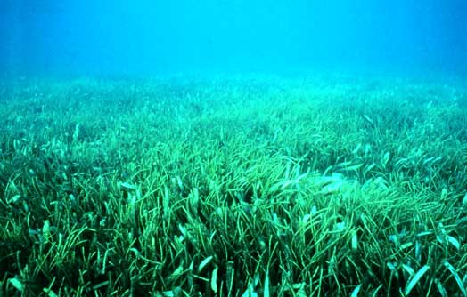

By Katie2
Plants
Phytoplankton - Varying classifications
Phytoplankton are the most abundant plant species in the ocean. They are single-celled organisms that drift on the surface of the sea. Phytoplankton are responsible for nearly half of all photosynthesis on earth. Photosynthesis is part of the carbon cycle; it helps reduce the amount of carbon dioxide in the atmosphere. Since phytoplankton are responsible for so much photosynthesis, they also help regulate the amount of carbon in the atmosphere. They require lots of sunlight and nutrients.

Red Algae - Phylum Rhodophyta
Red algae are a small form of algae. All species are either single-celled or formed in thin filaments. Red algae attaches itself to a substrate such as a rock, coral, or animal shell. Red algae lives in deeper water than other colored algae, simply because of its color. The pigment phycoerythrin absorbs blue light and reflects red light, and since blue light can travel further through the water, red algae can live in much deeper waters. Red algae is also rich in proteins and vitamins, making it a major food source in Asia.
Sea Grass - Order Alismatales
Sea grasses are a group of between 50 and 60 flowering plant species. They grow in thick beds along the ocean floor, covering nearly 110,000 square miles of the tropical ocean. Beds of sea grass provide shelter for a number of fish species, as well as serving as a breeding ground for fish and turtles. More importantly, sea grass beds are thick enough to protect the sediment from extreme weather conditions, and their roots hold sediment together, which shields coastlines from erosion. In addition, sea grasses absorb carbon dioxide.
Kelp - Order Laminariales
Kelp is a type of seaweed that belongs to the class of brown algae. When a kelp population reaches the surface and spreads its leaves to form a canopy, it is considered a kelp forest. If the population remains entirely submerged, it is a kelp bed. Kelp, like red algae, attaches to a substrate, and doesn’t seek out nutrients. Instead, it allows the water moving around it to carry nutrients to it. Kelp grows surprisingly quickly considering how few species feed on it.
Adaptations
- Many types of seaweed and other marine plants have developed air sacks to lift themselves toward the water surface. In order to photosynthesize, ocean plants must lift their photosynthetic surfaces to the area of most light. In order to reach the surface, these plants collect gas in their air sacks and use it to lift themselves to the surface.
- Land-based plants use roots to get water and nutrients; the stem and roots are entirely designed for this reason. However, in marine plants, the roots, called a holdfast, have a different purpose. Oceanic plants use their holdfasts to attach to a substrate and keep themselves anchored.
- Unlike land-based plants, the water that marine plants take in contains dissolved salt. Different adaptations have arisen in different plants to handle the salt. Some plants adapted to live in different regions that have lower salinity levels. Others have mechanisms that break down salt into chlorine and sodium, and some pass it along with the byproducts of photosynthesis. Due to these adaptations, many marine plants regulate the salinity of the water in their region.